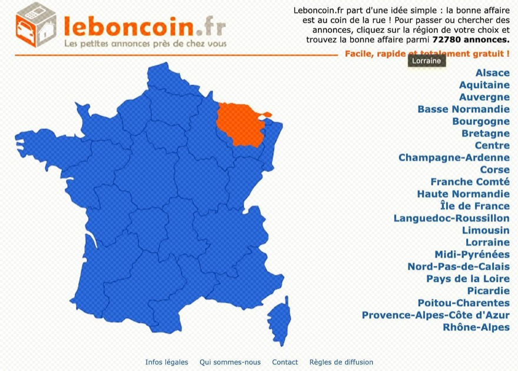
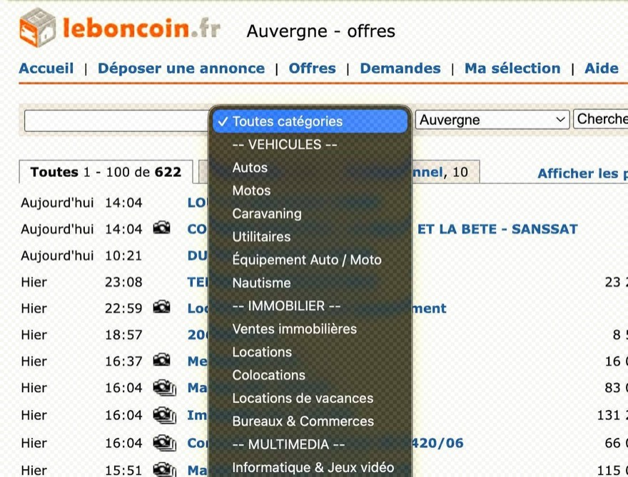
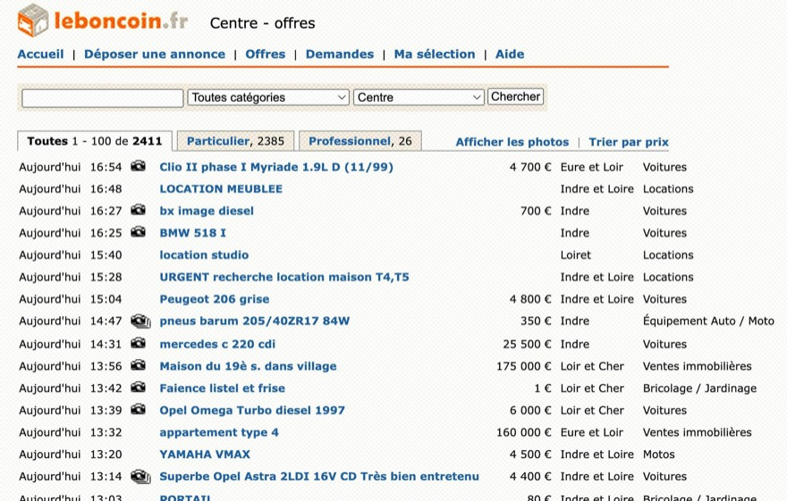
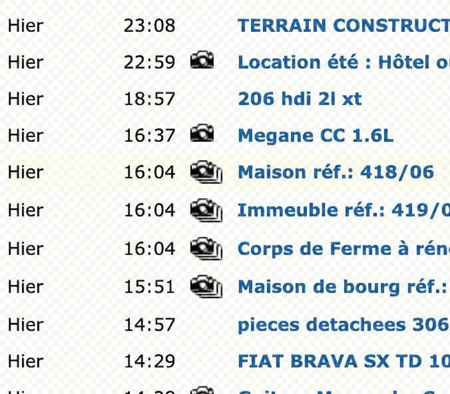
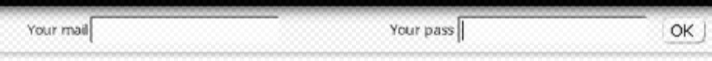
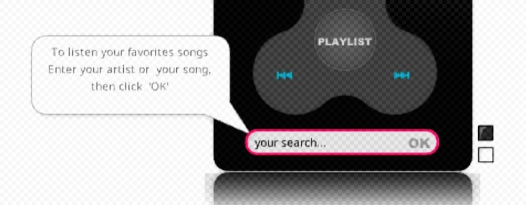
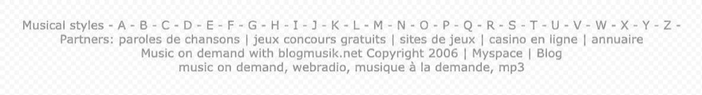
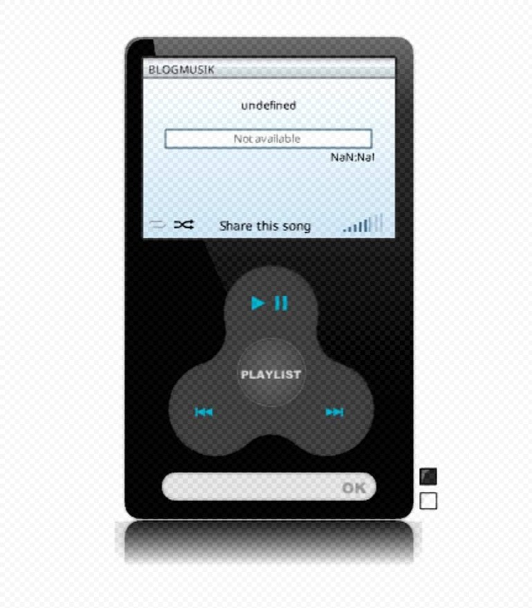
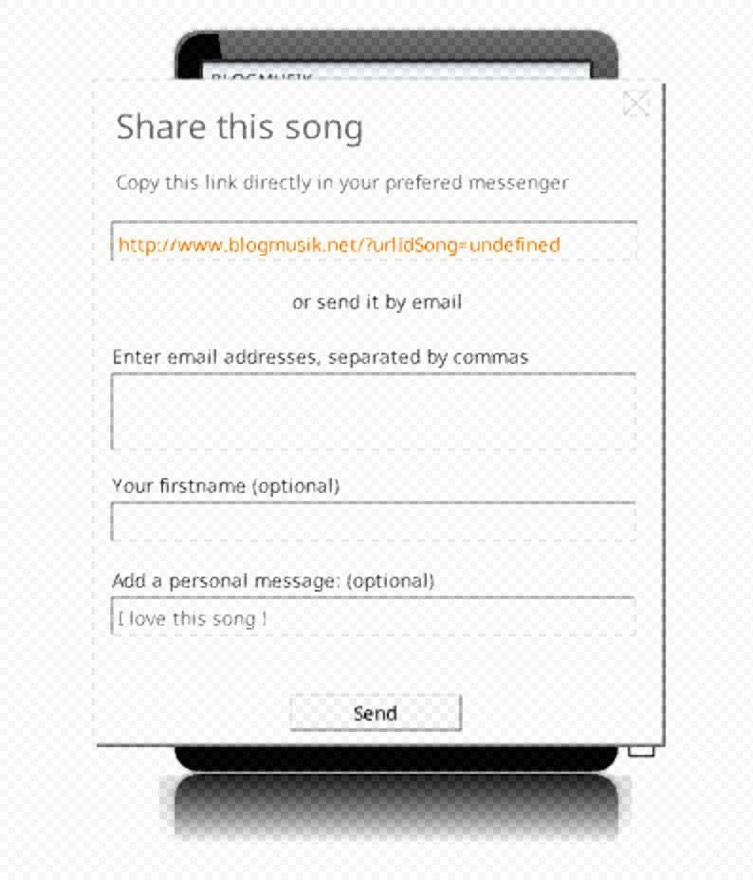
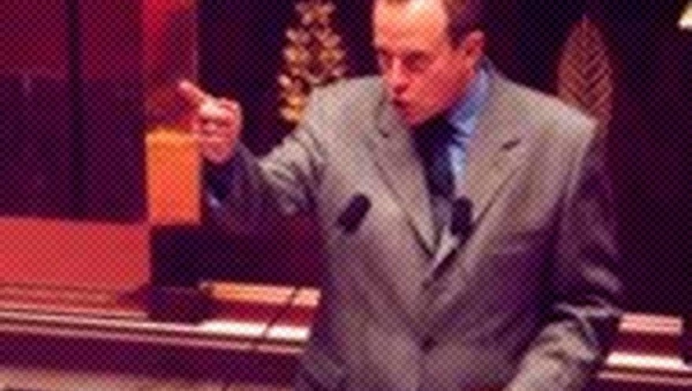

2006 DESIGN WEB
Leboncoin,
Blogmusik
et
loi DADVSI
|
|
ACCUEIL
|
LEBONCOIN
|
BLOGMUSIK
|
DADVSI
|
2006 / 2026
|
QUESTION
|
SOURCES
|
MENU
→ Introduction
LEBONCOIN
→ Le marché local
→ Simplicité
→ Proximité
→ Accessibilité
BLOGMUSIK
→ MP3
→ Recherche
→ Streaming
→ Flash
DADVSI
→ Droits d'auteur
→ DRM
→ Interopérabilité
→ Restrictions
→ Fichier .SWF
→ 2006 / 2026
→ Question de recherche
→ Bibliographie
PAGE MISE À JOUR :
07/09/2006
|
Leboncoin,
Blogmusik
et
loi DADVSI
Comment le design numérique de 2006 traduit-il
les contraintes techniques, les nouveaux usages
et les tensions juridiques du Web ?
En 2006, le Web entre dans une période de transformation.
Les services en ligne se multiplient et les usages dépassent
la simple consultation de pages statiques. En France, l'ARCEP
recense 12,7 millions d'abonnements haut débit au 31 décembre 2006,
dont 12 millions d'accès ADSL.
[01]
Acheter, vendre, écouter de la musique ou partager des contenus
deviennent progressivement des activités quotidiennes sur Internet.
Mais les interfaces sont encore fortement contraintes par les
technologies disponibles. Les sites sont conçus pour des écrans
fixes, les connexions ne sont pas toujours rapides, et le
développement d'interfaces riches repose encore largement
sur des technologies comme Flash.
Trois exemples permettent d'observer cette période
sous des angles différents :
LEBONCOIN
: vendre et acheter localement.
BLOGMUSIK
: organiser et écouter une bibliothèque musicale en ligne.
DADVSI
: concevoir des usages numériques dans un contexte de
contrôle des droits d'auteur.
|
|
|
VISITER
► LEBONCOIN 2006
► BLOGMUSIK 2006
COULEURS
█ LEBONCOIN
█ BLOGMUSIK
█ DADVSI
À RETENIR :
SIMPLICITÉ
INTERACTIVITÉ
CONTRÔLE
2006 NEWS
Le haut débit se développe.
[01]
Les petites annonces en ligne.
La musique dans le navigateur.
Le droit suit les usages.
|
|
|
|
LEBONCOIN
LE WEB COMME MARCHÉ LOCAL
|
|
| |
→ Le marché local
·
→ Simplicité
·
→ Proximité
·
→ Accessibilité
█
SIMPLICITÉ
·
PROXIMITÉ
·
ACCESSIBILITÉ
Lancé en France en 2006, leboncoin.fr est créé sur le modèle
du site suédois « Blocket ». Dès son lancement, le service est
présenté comme gratuit, sans commission, et cherche à
rapprocher les utilisateurs : trouver « son bonheur au coin
de la rue et non au bout du monde ».
[02]
Sur la chronologie de La revue des médias (INA),
« Les grandes dates de l'internet, des terminaux et des
services de contenus numériques », le lancement de
leboncoin est daté du 1er janvier 2006.
[08]
Archive Wayback Machine, 15 juin 2006
|

Première interface / page d'accueil
|
Le premier intérêt du site réside dans sa simplicité.
Le design ne cherche pas à impressionner par des effets
graphiques complexes. Il privilégie l'information, la recherche
et l'accès rapide aux annonces : catégories, barre de recherche,
organisation des listes, hiérarchie lisible.
Cette simplicité correspond également aux contraintes du Web
de l'époque : une interface légère permet de limiter les
éléments à charger et de rendre le service accessible au
plus grand nombre.
|

Recherche par catégories, dans une barre unique
|
Pour rechercher des annonces, leboncoin propose à l'utilisateur
de naviguer entre une carte interactive et une barre de recherche.
Le geste est déjà proche de ce que l'on retrouve encore aujourd'hui.
Dans la liste, les grandes catégories et sous-catégories
resserrent la multiplicité théorique des offres : on ne
parcourt pas « tout le Web », on choisit un type d'objet
dans une frise lisible.
|

Page des petites annonces
|
|

Icônes à la place des photos
|
Dans ses premières versions, les images associées aux
annonces ne s'affichent pas directement : des icônes
les remplacent. La page reste plus légère, et voir la
photo demande un clic supplémentaire. Cette décision
répond aux contraintes techniques du chargement, mais
elle aligne aussi l'interface sur l'aspect « journal »
des petites annonces : l'information textuelle prime,
l'image reste secondaire.
L'une des particularités du site est de remettre la
proximité géographique au centre de l'expérience.
L'interface reprend l'organisation d'un journal de
petites annonces local.
Leboncoin n'impose pas Internet comme un espace sans
frontières. Il impose des délimitations territoriales.
Cette approche constitue une rupture avec l'idée d'un
Web donnant accès à des biens « partout dans le monde ».
Le site mise au contraire sur la proximité et la rencontre
entre particuliers.
[02]
Ainsi, le site prône l'accessibilité et la simplicité à tous.
|
|
|
|
|
|
BLOGMUSIK
L'IPOD DANS LE NAVIGATEUR
|
|
| |
→ MP3
·
→ Recherche
·
→ Streaming
·
→ Flash
█
RECHERCHE
·
LECTEUR
·
STREAMING
En juin 2006, Daniel Marhely lance Blogmusik, un service
permettant d'écouter de la musique en ligne depuis un
navigateur, comme un « baladeur iPod virtuel ».
[03]
Dès l'automne 2006, le service propose déjà plus de
200 000 titres à l'écoute. Le projet deviendra ensuite Deezer.
[03]
L'objectif est alors de rendre la musique accessible depuis
un navigateur plutôt que de dépendre uniquement d'un fichier
stocké sur son ordinateur ou d'un baladeur MP3 physique.
Archive Wayback Machine, 26 août 2006
|

Barre de connexion
|
Avant même le catalogue, l'interface demande de se connecter :
l'écoute n'est pas un simple affichage de page, c'est un
compte, un accès, une session.
Organiser une bibliothèque musicale illimitée dans un écran limité
Le problème change complètement d'échelle. Comment présenter
des milliers, puis des centaines de milliers de morceaux
sans perdre l'utilisateur ?
L'interface doit permettre de rechercher un titre, identifier
un artiste, parcourir une liste et lancer immédiatement une
écoute. La recherche devient un élément central de l'expérience.
|

Barre de recherche
|
L'utilisateur bénéficie donc d'une immense bibliothèque
de musiques à sa disposition. Les listes verticales,
les catégories musicales et les informations associées
aux morceaux transforment une immense quantité de
données en bibliothèque navigable.
|

Styles par ordre alphabétique et liens vers d'autres contenus
|
Blogmusik classe les styles de musique par ordre
alphabétique et les hyperliens redirigent vers d'autres
contenus du service.
Reproduire un objet physique
Dans la continuité du skeuomorphisme, un lecteur MP3
devient une interface dans le navigateur. En septembre 2006,
TechCrunch décrit un lecteur Flash « that looks like an iPod ».
[04]
L'interface rappelle les appareils tangibles que les
utilisateurs possèdent déjà. Reprendre une forme familière
rend un nouvel usage compréhensible : on reconnaît le
baladeur, on sait comment lancer l'écoute.
|

Le lecteur musical dans le navigateur
|
|

Partage de musique, affiché sur le lecteur
|
Sur le même objet-écran, une couche de partage s'affiche
par-dessus le lecteur. La musique peut désormais être
transmise, montrée, inscrite dans un usage social, sans
pour autant devoir quitter le navigateur.
Flash et l'interactivité
À cette période, les lecteurs Flash Player jouent un rôle
important dans la conception d'interfaces interactives.
Blogmusik s'appuie sur cette technologie pour développer
le service et pour lire la musique depuis le navigateur.
[03]
[04]
Cette technologie permet d'aller au-delà des restrictions
d'une page HTML traditionnelle. L'expérience est alors
pensée pour un écran donné plutôt que pour une multitude
de formats.
Le lecteur musical de Blogmusik s'inscrit dans cette
logique d'interface interactive, diffusée dans le navigateur.
Une première forme de streaming
NE PLUS NÉCESSAIREMENT POSSÉDER LE FICHIER
POUR ACCÉDER À LA MUSIQUE.
L'utilisateur passe progressivement d'une logique de
possession à un accès en ligne. En 2006, l'écoute
reste encore largement associée au fichier, au
téléchargement et au baladeur. Blogmusik déplace
l'usage vers le navigateur.
[03]
Cette transformation précède les plateformes de
streaming qui vont suivre.
|
Mais en 2006, cette nouvelle pratique se heurte encore
directement à la question des droits d'auteur.
|
|
|
DADVSI
QUAND LE DROIT DEVIENT UNE CONTRAINTE DE DESIGN
|
| |
→ Droits d'auteur
·
→ DRM
·
→ Interopérabilité
·
→ Restrictions
█
DROIT
·
CONTRÔLE
·
RESTRICTION
1er AOÛT 2006
Loi n° 2006-961 relative au droit d'auteur et aux droits
voisins dans la société de l'information
[05]
Légifrance
[05]
La loi DADVSI de 2006 est destinée à encadrer et réguler
les utilisations non autorisées d'une œuvre numérique.
Ces protections peuvent par exemple limiter la copie, le
transfert ou l'utilisation d'un fichier sur certains
appareils. La loi prévoit cependant que ces protections
ne doivent pas empêcher complètement l'interopérabilité,
c'est-à-dire la possibilité pour différents logiciels,
appareils ou systèmes de fonctionner ensemble.
[05]
|

Adoption du projet à l'Assemblée nationale
|
L'interopérabilité désigne la capacité d'un contenu, d'un
logiciel ou d'un appareil à fonctionner avec d'autres
systèmes. Avec les mesures de protection numérique, un
fichier peut être utilisable sur un appareil mais pas sur
un autre. Il peut également être lié à un logiciel ou à
une plateforme particulière.
Ainsi pour l'utilisateur, cela crée une situation simple
mais problématique : il possède ou a obtenu un contenu,
mais ne peut pas forcément l'utiliser comme il le souhaite.
Marche contre la loi DADVSI, avec dépôt de gerbe à la mémoire du droit d'auteur, le 7 mai 2006
|
INTEROPÉRABILITÉ
|
CONTENU PROTÉGÉ
|
| ↓ |
|
MESURE TECHNIQUE
|
| ↓ |
|
LOGICIEL / APPAREIL / SYSTÈME
|
| ↓ |
|
ACCÈS OU LIMITATION
|
Une tension entre simplicité et contrôle
Le Web de 2006 révèle alors une contradiction. Les nouvelles
interfaces cherchent à rendre l'accès aux contenus toujours
plus simple. Dans le même temps, les ayants droit et les
plateformes cherchent à contrôler leur circulation.
|
FACILITER L'ACCÈS
|
VS
|
CONTRÔLER L'UTILISATION
|
|
|
|
SUITE
→ Fichier .SWF
→ 2006 / 2026
→ Question
→ Bibliographie
|
Le format .swf est associé aux lecteurs Flash. La
documentation indique que ce système permet de lier
graphismes vectoriels, texte, vidéo et son sur Internet,
via Adobe Flash Player par exemple.
[07]
À une époque où le HTML permet encore difficilement de
reproduire certaines interactions riches, Flash devient un
outil majeur pour créer des expériences multimédias
directement dans le navigateur. Le lecteur musical de
Blogmusik s'inscrit par exemple dans cette logique.
|
2006
|
2026
|
→ Haut débit en développement
[01]
→ Écrans principalement fixes
→ Flash encore central pour de nombreuses interfaces riches
[07]
→ Interfaces fortement dépendantes des technologies disponibles
|
→ Connexions beaucoup plus rapides
→ Diversité des tailles d'écran
→ Responsive design et CSS moderne
→ Applications Web riches
→ Flash n'est plus un standard du Web contemporain
|
Pourtant, certaines problématiques de 2006 restent actuelles :
organiser une grande quantité d'informations ; rendre un service
accessible ; rendre compréhensible une nouvelle technologie ;
concevoir une expérience lorsque des contraintes juridiques ou
techniques empêchent certaines actions.
|
Leboncoin
répond à la première question par la simplicité et la proximité.
|
|
Blogmusik
répond à la seconde par la recherche, la catégorisation
et la métaphore du lecteur musical.
|
|
DADVSI
révèle la troisième : lorsqu'une règle ou une technologie
limite l'utilisateur, cette contrainte devient elle-même
un élément de l'expérience.
|
|
En 2006, comment les contraintes techniques,
économiques et juridiques ont-elles façonné
les formes du design web et les nouveaux
usages numériques ?
|
LEBONCOIN
→ simplicité
→ proximité
→ accessibilité
→ petites annonces
BLOGMUSIK
→ recherche
→ organisation des données
→ lecteur multimédia
→ streaming
DADVSI
→ droits d'auteur
→ mesures techniques / DRM
→ interopérabilité
→ restrictions
CONSTAT
Les contraintes du Web deviennent visibles dans les interfaces.
|
Le design ne cherche pas encore seulement à être fluide,
responsive et invisible. Il doit composer avec la technologie
disponible. Ces contraintes contribuent à définir les usages
qui deviendront, quelques années plus tard, la norme du Web.
Afficher le détail des références
Chaque lien ouvre la source originale dans un nouvel onglet.
[01]
ARCEP
Observatoire des marchés des communications électroniques, 4e trimestre 2006
2006 · Source institutionnelle (régulateur)
CONSULTER →
|
[02]
leboncoin Corporate
L'entreprise / L'histoire du boncoin
Page institutionnelle · consultée pour le récit officiel 2006
CONSULTER →
|
[03]
Centre national de la musique
Deezer, une licorne du « freemium » née en France
10 avril 2020 / mise à jour 21 septembre 2023 · Source institutionnelle
CONSULTER →
|
[04]
Michael Arrington, TechCrunch
Check out Blogmusik Before It's Pulled off the Internet
9 septembre 2006 · Presse contemporaine
CONSULTER →
|
[05]
Légifrance
Loi n° 2006-961 du 1er août 2006
Texte juridique officiel
CONSULTER →
|
[06]
Internet Archive, Wayback Machine
Archives des interfaces Leboncoin et Blogmusik (2006)
LEBONCOIN 2006 →
BLOGMUSIK 2006 →
|
[07]
Adobe
SWF and AMF Technology Center (documentation historique, archive)
Source technique éditeur
CONSULTER →
|
[08]
INA / La revue des médias
Les grandes dates de l'internet, des terminaux et des services de contenus numériques
Chronologie
CONSULTER →
|
[09]
Wikipédia
Chronologie de la loi DADVSI
Section Opposition / Formes de l'opposition
CONSULTER →
|
[10]
Vincent Alzieu, Les Numériques
Le projet de loi DADVSI adopté à l'Assemblée : ses conséquences
22 mars 2006 · Presse contemporaine
CONSULTER →
|
|
|
█
2006 / 2026
QUESTION
SOURCES
|
|
ACCUEIL
|
LEBONCOIN
|
BLOGMUSIK
|
DADVSI
|
2006 / 2026
|
QUESTION
|
SOURCES
|
2006 DESIGN WEB - Johann et Thaddée
Leboncoin,
Blogmusik
et
loi DADVSI
|